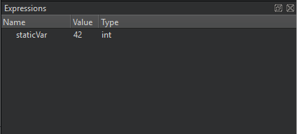
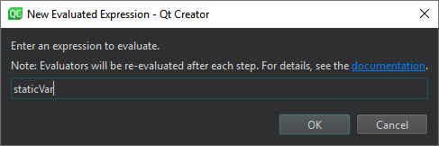

Evaluating expressions
To access global data that is not visible in the Locals view or to compute values of arithmetic expressions or function calls, use expression evaluators in the Expressions view.
For example, if you define static int staticVar = 42; in a source file and then add staticVar as an evaluated expression, you should see 42 in the view when the debugger stops in the source file.
You can also use Expression Evaluators as shortcuts to items that are nested deeply in the locals tree.

Adding expression evaluators
To add expression evaluators, drag an expression from the code editor to the Expressions view.
You can also:
- Double-click in the Expressions or Locals view.
- Select Add New Expression Evaluator from the context menu.
Enter the expression in the New Evaluated Expression dialog:

The set of evaluated expressions is saved in your session.
Expression evaluators are re-evaluated whenever the current frame changes. The functions used in the expressions are called each time, even if they have side-effects.
Note: Evaluating expressions is slow, so remove expression evaluators after use.
JavaScript expressions
The QML debugger can evaluate JavaScript expressions.
C and C++ expressions
CDB, GDB, and LLDB support the evaluation of simple C and C++ expressions, such as arithmetic expressions made of simple values and pointers.
Depending on the backend and concrete location, some function calls can be evaluated. CDB is the most limited backend in this respect.
Function calls
Functions can be called only if they are actually compiled into the debugged executable or a library used by the executable. Inlined functions such as most operator[] implementations of standard containers are typically not available.
Note: When an expression has a function call, anything can happen, including corruption of the application's state, or using the application's permission to perform arbitrary actions.
Ranged syntax
When using GDB or LLDB as backend, you can use a special ranged syntax to display multiple values with one expression. A sub-expression of form foo[a..b] is split into a sequence of individually evaluated expressions foo[a], ..., foo[b].
Compound variables
You can expand compound variables of struct or class type to show their members. As you also see the variable value and type, you can examine and traverse the low-level layout of object data.
Optimized builds
GDB and LLDB, and therefore Qt Creator's debugger, also work for optimized builds on Linux and macOS. Optimization can lead to re-ordering of instructions or removal of some local variables, causing the Locals and Expressions views to show unexpected data.
GCC
The debug information from GCC does not include enough information about the time when a variable is initialized. Therefore, Qt Creator can not tell whether the contents of a local variable are real data or initial noise. If a QObject appears uninitialized, its value is reported as not in scope. Not all uninitialized objects, however, can be recognized as such.
Expressions view actions
Right-click the Expressions view to select the following actions:
- Add and remove expression evaluators
- Change value display format
- Expand and collapse view contents
- Copy view contents or expression values to the clipboard
- Open view contents in an editor
- Open memory editor
- Set data breakpoints
- Use debugging helpers
- Show and hide tooltips in the view when debugging
- Dereference pointers automatically
- Sort members of classes and structs alphabetically
- Use dynamic object type for display
- Set debugger preferences
See also How To: Debug, Debugging, Debuggers, and Debugger.